전자계산기기사 (2017-09-23 기출문제)
1과목: 시스템 프로그래밍
1. 다음 어셈블러 명령어 중 LTORG 명령에 관련된 내용으로 가장 적합하지 않은 것은?
- 리터럴 풀은 LTORG 명령 다음에 만들어진다.
- LTORG 명령어를 사용하지 않는 경우는 처음 제어섹션 끝에 만들어진다.
- 중복되는 데이터는 서로 다른 공간에 어셈블한다.
- 각각의 리터럴 풀은 4개의 세그먼트를 가진다.
(정답률: 56%)

2. 절대로더(Absolute Loader)에서 할당과 연결을 수행하는 주체는?
- 어셈블러
- 로더
- 프로그래머
- 어셈블러와 로더
(정답률: 78%)
3. 매크로 프로세서의 기능에 해당하지 않는 것은?
- 매크로 정의 인식
- 매크로 정의 치환
- 매크로 정의 저장
- 매크로 호출 인식
(정답률: 75%)
4. 프로그램 작성시 한 프로그램 내에서 동일한 코드가 반복될 경우 반복되는 코드를 한번만 작성하여 특정 이름으로 정의한 후, 그 코드가 필요할 때마다 정의된 이름을 호출하여 사용하는 것은?
- 필터
- 리터럴 테이블
- 매크로
- 프로세스
(정답률: 83%)
5. 프로그램을 실행하기 위하여 프로그램을 보조기억장치로부터 컴퓨터의 주기억장치에 올려놓는 기능을 하는 것은?
- Loader
- Preprocessor
- Linker
- Emulator
(정답률: 67%)
6. 매크로에 대한 설명으로 가장 옳지 않은 것은?
- 원시문 형태의 개방된 서브루틴이다.
- 실행 매크로와 선언 매크로로 나눌 수 있다.
- 가변 기호 번지는 @기호로 시작된다.
- 호출된 매크로는 그 위치에 매크로 내용이 삽입되므로, 이것을 매크로 확장이라 한다.
(정답률: 59%)
7. 서브루틴에서 자신을 호출한 곳으로 복귀시키는 어셈블리어 명령은?
- SUB
- MOV
- RET
- INT
(정답률: 79%)
8. 하나의 CPU와 주기억장치를 이용하여 여러 개의 프로그램을 동시에 처리하는 방식으로 가장 옳은 것은?
- 다중 프로그래밍 시스템
- 시분할 시스템
- 다중 처리 시스템
- 분산 처리 시스템
(정답률: 73%)
9. 운영체제의 성능 평가 요소로 가장 거리가 먼 것은?
- 처리 능력
- 비용
- 사용 가능도
- 신뢰도
(정답률: 82%)
10. 어셈블리어에 대한 설명으로 가장 옳지 않은 것은?
- 머신 코드를 니모닉 기호로 표현한 것이다
- CPU로 쓰이는 프로세서에 따라 그 종류가 다르다
- JAVA언어와 같은 고급 레벨의 언어이다
- 머신 명령문과 의사(pseudo) 명령문이 있다
(정답률: 79%)
11. 언어번역 프로그램이 아닌 것은?
- linker
- assembler
- compiler
- interpreter
(정답률: 74%)
12. O/S의 제어프로그램으로 작업 연속처리를 위한 스케줄 및 시스템 자원 할당의 기능을 수행하는 것은?
- 서비스(Service) 프로그램
- 감시(Supervisor) 프로그램
- 데이터 관리(Data Management) 프로그램
- 작업제어(Job Control) 프로그램
(정답률: 75%)
13. 다음 중 로더(Loader)의 기능이 아닌 것은?
- Allocation
- Link
- Relocation
- Compile
(정답률: 76%)
14. 로더의 종류 중 다음 설명에 해당하는 것은?
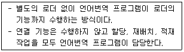
- 절대 로더
- Compile And Go 로더
- 직접 연결 로더
- 동적 적재 로더
(정답률: 75%)
15. 매크로프로세서의 기본적인 수행 작업으로 가장 옳지 않은 것은?
- 매크로 정의
- 매크로 확장
- 매크로 호출
- 매크로 소멸
(정답률: 79%)
16. 어떤 기호적 이름에 상수 값을 할당하는 어셈블리어 명령은?
- ORG
- INCLUDE
- END
- EQU
(정답률: 80%)
17. 가상기억장치 관리와 가장 관계가 적은 것은?
- 쓰래싱(thrashing)
- 워킹 세트(working set)
- 구역성(locality)
- 오버레이(overlay)
(정답률: 46%)
18. 다음 중 2패스 어셈블러의 패스1에서 수행하는 작업이 아닌 것은?
- 각 기계어의 길이를 결정한다.
- 명령어들을 만들어낸다.
- 위치카운터 값을 증가시킨다.
- 리터럴(Literal)들을 기억한다.
(정답률: 46%)
19. 프로그램 언어의 실행 과정 순서로 옳은 것은?
- 로더 → 링커 → 컴파일러
- 컴파일러 → 로더 → 링커
- 링커 → 컴파일러 → 로더
- 컴파일러 → 링커 → 로더
(정답률: 75%)
20. 스케줄링 정책을 결정하는 경우에 고려되어야 할 요소로서 가장 관련이 적은 것은?
- 프로그램의 성격
- 자원의 요구도
- 자원의 제한성
- 자원의 유용도와 체제의 균형
(정답률: 65%)
2과목: 전자계산기구조
21. 주기억장치가 연속한 8바이트(Byte)의 필드(Field)를 더블워드(Double Word)라 할 때 하프워드(Half Word)는 몇 바이트 인가?
- 2
- 4
- 8
- 16
(정답률: 50%)
22. 4096x16의 용량을 가진 주기억장치가 있다. 메모리 버퍼 레지스터(MBR)는 몇 비트의 레지스터인가?
- 4
- 16
- 32
- 4096
(정답률: 70%)
23. 다음 회로도에 해당하는 게이트(gate)는?
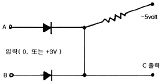
- OR
- AND
- NAND
- NOR
(정답률: 57%)
24. 명령의 대상이 되는 data가 내부 레지스터에 있고 구체적인 레지스터는 명령어(instruction) 그 자체에 함축되어 있는 주소지정방식은?
- implied addressing mode
- register addressing mode
- immediate addressing mode
- direct addressing mode
(정답률: 50%)
25. 실수 0.01101(2)을 32비트 부동 소수점으로 표현하려고 한다. 지수부에 들어갈 알맞은 표현은? (단, 바이어스된 지수(biased exponent)는 01111111(2)로 나타내며 IEEE754 표준을 따른다.)
- 01111100(2)
- 01111101(2)
- 01111110(2)
- 10000000(2)
(정답률: 59%)
26. 일반적인 컴퓨터의 CPU 구조 가운데 수식을 계산할 때 수식을 미리 처리되는 순서인 역 polish(또는 postfix) 형식으로 바꾸어야 하는 CPU 구조는?
- 단일 누산기 구조 CPU
- 범용 레지스터 구조 CPU
- 스택 구조 CPU
- 모든 CPU 구조
(정답률: 56%)
27. 16 비트로 한 word를 구성할 때 정수의 최대치는? (단, 고정소수점 정수이며, 양수로만 표시됨을 가정한다.)
- 216
- 216 - 1
- 215 - 1
- 215
(정답률: 67%)
28. 주기억장치의 용량이 512KB인 컴퓨터에서 32비트의 가상주소를 사용하는데, 페이지의 크기가 1K워드이고 1워드가 4바이트라면 주기억장치의 페이지 수는 몇 개인가?
- 32개
- 64개
- 128개
- 512개
(정답률: 55%)
29. 인터럽트 처리 루틴에서 반드시 사용되는 레지스터는?
- Index Register
- Accumulator
- Program Counter
- MAR
(정답률: 59%)
30. I/O operation과 가장 관계없는 것은?
- Channel
- Handshaking
- Interrupt
- Emulation
(정답률: 58%)
31. 보조기억장치로부터 주기억장치로 필요한 페이즈를 옮기는 것은?
- saving
- storing
- paging
- spooling
(정답률: 58%)
32. 오류검출코드에 대한 설명으로 가장 옳지 않은 것은?
- Biquinary 코드는 5비트 중 1이 2개 있다.
- 2 out of 5 코드는 코드의 각 그룹 중 1의 개수가 2개 있다.
- 링 카운터 코드는 10개의 비트로 구성되어 있으며, 모든 코드가 하나의 비트에 반드시 1을 가진다.
- Hamming 코드는 오류검출 및 교정이 가능하다.
(정답률: 51%)
33. k개의 단계들로 구성된 일반적인 파이프라인 프로세서에서 N개의 명령어들을 실행하는데 걸리는 시간을 구하는 식은?
- T(1,1) = k + N
- T(1,1) = k * N - 1
- T(1,1) = kN - 1
- T(1,1) = k + N - 1
(정답률: 51%)
34. 두 개의 8-비트 레지스터에 저장되어 있는 값을 병렬 덧셈하는 ALU를 설계할 때 필요한 전가산기의 수로 가장 옳은 것은?
- 3개
- 4개
- 8개
- 16개
(정답률: 40%)
35. 외부하드디스크 드라이브, CD-ROM 드라이브, 스캐너 및 자기 테이프 백업 장치 등을 연결할 수 있는 장치는?
- DVI
- VESA
- SCSI
- AGP
(정답률: 57%)
36. 명령어의 길이가 16bit이다. 이 중 OP code가 6bit, operand가 10bit를 차지한다면 이 명령어가 가질 수 있는 연산자 종류는 최대 몇 개인가?
- 16개
- 32개
- 64개
- 256개
(정답률: 57%)
37. 1MByte의 기억장소를 가진 어떤 컴퓨터의 명령어 구성이 다음과 같을 때 이 명령어가 가질 수 있는 최대 Operation 수는?
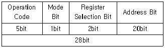
- 32개
- 64개
- 128개
- 256개
(정답률: 65%)
38. 벡터 형태의 데이터를 처리하는데 가장 효율적인 병렬 처리기는?
- 파이프라인 처리기
- 배열 처리기
- 다중 처리기
- VLSI 처리기
(정답률: 59%)
39. 인터럽트 가운데 소프트웨어적 우선순위 처리기법은?
- 폴링(polling) 방법
- 벡터 인터럽트(vector interrupt) 방법
- 데이지체인(daisy-chain) 방법
- 병렬 우선순위(parallel priority) 방법
(정답률: 55%)
40. 3-차원 하이퍼큐브 구조에서 임의의 노드에서 가장 먼 노드까지 메시지를 전송할 때 적어도 몇개의 링크를 사용하여야 하는가?
- 1개
- 2개
- 3개
- 8개
(정답률: 45%)
3과목: 마이크로전자계산기
41. RISC에 대한 설명으로 가장 옳지 않은 것은?
- 컴퓨터에서 사용되는 명령어의 수를 줄임으로서 하드웨어를 단순화시키고 시스템 성능을 더욱 개선한 컴퓨터 구조 기술이다.
- 대부분 제어 메모리가 없는 하드 와이어 제어방식을 사용한다.
- CISC에 비해 명령어 형식이 다양하다.
- 명령어 수행은 하드웨어에 의해 직접 실행된다.
(정답률: 60%)
42. 입출력 장치의 주소지정회로는 사용하고자 하는 입출력장치의 수에 의해 결정되는데 8개 이하의 포트를 사용하기 위한 방법 중 가장 간단한 방식은?
- Decoder 방식
- Multiplexer 방식
- Encoder 방식
- Linear selection 방법
(정답률: 37%)
43. 누산기(accumulator)에 저장된 내용의 보수를 구하는 명령이 수행될 때 ALU에서 처리되는 내용으로 가장 옳은 것은?
- 누산기의 값을 버스(bus)에 옮긴다.
- 보수를 취한다.
- 프로그램 카운터(PC)를 증가시킨다.
- 명령을 해석한다.
(정답률: 57%)
44. DMA의 입출력 방식과 가장 관계없는 것은?
- DMA 제어기가 필요하다.
- CPU의 계속적인 간섭이 필요하다.
- 비교적 속도가 빠른 입출력 방식이다.
- 기억장치와 주변장치 사이에 직접적인 자료전송을 제공한다.
(정답률: 72%)
45. 동시에 여러 개의 입･출력장치를 제어할 수 있는 채널은?
- 멀티플렉서 채널
- 레지스터 채널
- 직렬 채널
- Simplex 채널
(정답률: 73%)
46. 512 byte 크기의 메모리를 필요로 하는데 사용되는 어드레스 라인(address line)은 몇 개인가?
- 8
- 9
- 11
- 10
(정답률: 50%)
47. 스택(stack)에 자료 전송 시 사용되는 명령어형식은?
- 0-주소명령 형식
- 1-주소명령 형식
- 2-주소명령 형식
- 3-주소명령 형식
(정답률: 52%)
48. 스택(Stack)에 대한 설명 중 가장 옳은 것은?
- LIFO 방식으로 정보를 다룬다.
- Graph의 자료구조와 유사하다.
- 매표소에서 표를 파는 방식과 같다.
- 비선형 자료구조이다.
(정답률: 57%)
49. 임베디드시스템 개발시 디버깅을 위한 장비는?
- JNI
- JAVA
- ZTAG
- JTAG
(정답률: 60%)
50. 마이크로컴퓨터의 기억장치에 대한 평가요소로 가장 적합하지 않은 것은?
- 기억용량
- 동작속도
- 신뢰도
- 데이터변환기법
(정답률: 56%)
51. 명령어 실행시 기억장치로부터 가져온 내용이 지정하는 동작을 수행하는 과정을 의미하는 것은?
- Fetch cycle
- Indirect cycle
- Execution cycle
- Interrupt cycle
(정답률: 47%)
52. 조건부 분기명령의 실행에서 수행되어야 할 다음 명령어를 결정하기 위해서는 어느 레지스터의 내용을 조사하는가?
- 인덱스 레지스터(Index Register)
- 상태 레지스터(Status Register)
- 명령 레지스터(Instruction Register)
- 메모리 주소 레지스터(Memory Address Register)
(정답률: 39%)
53. Dynamic RAM에 관한 설명 중 가장 옳은 것은?
- Static RAM의 경우보다 Access time이 빠르다.
- 위치에 따라 Access time이 다르므로 엄밀하게 말하면 Random access가 아니다.
- 빠른 처리 속도가 필요한 소규모 외부 캐시기억장치에 주로 사용한다.
- 집적도를 높이고 전력소모를 적게하나 Refresh 때문에 속도는 SRAM보다 느리다.
(정답률: 56%)
54. 기억 장치의 액세스 속도를 향상시키기 위한 방법이 아닌 것은?
- 가상(virtual) 메모리
- 메모리 뱅킹(banking)
- 메모리 인터리빙(interleaving)
- 캐시(cashe) 메모리
(정답률: 52%)
55. 마이크로프로세서가 I/O 인터페이스로부터 요청된 인터럽트를 해결하기 위해 I/O 주변 장치를 인식하는 방법 중 인식 과정의 속도를 향상시키기 위하여 각 I/O 주변장치에 특정 코드를 할당하는 방법은?
- 폴링 방식
- 벡터 인터럽트 방식
- 다중 인터럽트 방식
- 프로그램 제어 방식
(정답률: 35%)
56. 다음 주소 명령어 중에서 연산 동작 후에도 피연산 데이터의 값이 바뀌지 않는 명령어형식은?
- 0-주소명령
- 1-주소명령
- 2-주소명령
- 3-주소명령
(정답률: 52%)
57. I/O-mapped-I/O와 memory-mapped-I/O에 대한 설명 중 틀린 것은?
- I/O-mapped-I/O에서는 입ㆍ출력을 가리키는 두개의 제어신호가 필요하다.
- I/O-mapped-I/O에서는 memory와 I/O 주소 공간을 공유한다.
- memory-mapped-I/O에서는 I/O 장치를 호출하는데 메모리형 명령어를 사용한다.
- memory-mapped-I/O에서는 memory location의 감소를 초래할 수 있다.
(정답률: 50%)
58. 입출력 인터페이스에 관한 설명 중 틀린 것은?
- RS-232C는 병렬 인터페이스를 위한 표준이다.
- IEEE-488은 범용 인터페이스 버스(GPIB)의 표준이다.
- 병렬 인터페이스는 짧은 응답시간이 요구되는 응용분야에 적합하다.
- RS-232C는 모뎀과 함께 사용되기도 한다.
(정답률: 48%)
59. 사이클 스틸에 관한 설명 중 가장 옳지 않은 것은?
- CPU의 상태보존이 필요하다.
- CPU는 사이클 스틸 동안 쉬고 있다.
- 수행하고 있던 프로그램은 한 명령어를 완전히 수행한 후 사이클 스틸이 수행된다.
- 수행 중인 명령이 하나의 메이저 상태를 마친 후 CPU는 하이 임피던스 상태로 된다.
(정답률: 33%)
60. 인터럽트 요청 및 서비스에 관한 순서가 옳게 나열된 것은?
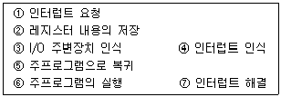
- ①-②-③-④-⑦-⑤-⑥
- ①-②-④-③-⑦-⑤-⑥
- ①-④-②-③-⑦-⑤-⑥
- ①-④-③-②-⑦-⑤-⑥
(정답률: 40%)
4과목: 논리회로
61. n Bit의 코드화된 정보를 그 코드의 각 Bit조합에 따라 2n개의 출력으로 번역하는 회로는?
- 멀티플렉서
- 인코더
- 디코더
- 디멀티플렉서
(정답률: 60%)
62. 다음 그림에 해당하는 장치는?
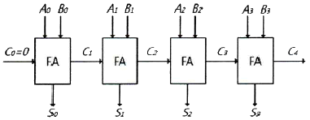
- 리플캐리 가산기
- 디코더
- 엔코더
- 8086 CPU
(정답률: 65%)
63. 다음 중 가장 큰 수는?
- 10진수 245
- 8진수 455
- 16진수 FC
- 2진수 11101011
(정답률: 63%)
64. 2진수 10110101을 그레이코드(gray code)로 변환한 결과로 옳은 것은?
- 01001010
- 01001011
- 00010000
- 11101111
(정답률: 67%)
65. 불 함수 F = wx + x’y + z 를 NAND 게이트로 구성하기 위한 식으로 가장 옳은 것은?
- F = ((wx)’ · (x’y)’ · z’)’
- F = (wx)’ · (x’y’) · z’
- F = ((wx)’ + (x’y)’ + z’)’
- F = (wx)’ + (x’y’) + z’
(정답률: 50%)
66. 다음 그림이 나타내는 논리회로는?
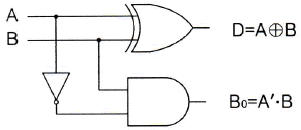
- 반감산기
- 전감산기
- 반가산기
- 전가산기
(정답률: 67%)
67. 클록형 JK 플립플롭에서 J=1, K=0 인 경우 수행되는 기능은?
- 불변(previous state)
- 리셋(reset)
- 세트(set)
- 토글(toggle)
(정답률: 50%)
68. JK형 플립플롭에서 NOT 게이트를 추가하면 어떤 플립플롭이 되는가?
- RST 플립플롭
- JK 플립플롭
- D 플립플롭
- T 플립플롭
(정답률: 48%)
69. 일반적인 형태의 동기식 카운터와 비동기식 카운터에 관한 내용으로 가장 옳지 않은 것은?
- 비동기식 카운터는 앞단의 출력이 다음 단으로 전달되는 식의 동작을 하므로 동기식에 비해 늦다.
- 동기식 카운터는 클록신호가 각 플립플롭에 동시에 인가되므로 고속카운터 회로구현에 이용된다.
- 동기식 카운터는 리플카운터보다는 늦고 복잡하므로 구현하기 어렵다.
- 최종 플립플롭의 보수 출력(
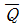
)을 처음 플립플롭의 입력으로 인가하여 순환되는 형태의 시프트카운터를 존슨(Johnson)카운터라고 한다.
(정답률: 46%)
70. 다음의 상태 변환도처럼 동작하는 순서 논리회로를 설계할 때 JK 플립플롭을 사용한다면 필요한 플립플롭의 수는 최소 몇 개인가?
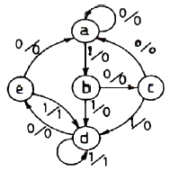
- 2개
- 3개
- 4개
- 5개
(정답률: 46%)
71. 다음 논리함수를 가장 간략화하였을 때의 결과로 옳은 것은? (단,
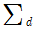
는 무정의 항을 가리킨다.)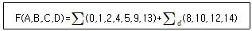
- A'C+C'D+A'B'D'
- A+C'
- A'C'+B'C'+A'B'D
- C'+B'D'
(정답률: 48%)
72. (X + Y)(X + Z) 를 가장 간략화한 표현식은?
- XY + YZ
- X + YZ
- Y + Z
- YZ
(정답률: 59%)
73. MUX의 입력이 진리표와 같을 때 도출되는 출력값 Y는?
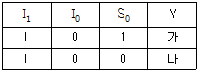
- 가:1, 나:0
- 가:1, 나:1
- 가:0, 나:0
- 가:0, 나:1
(정답률: 51%)
74. Wire-OR로 쓸 수 있는 TTL의 출력단은?
- Open-collector
- Totem-pole
- Three-state
- 없다.
(정답률: 51%)
75. 다음 회로에서 입력 X=1, Y=1 일 경우 출력C(carry)와 S(sum)는 얼마가 되는가?
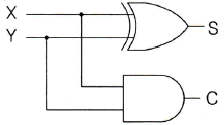
- C=0, S=0
- C=0, S=1
- C=1, S=0
- C=1, S=1
(정답률: 56%)
76. 입력 펄스의 수를 세는 회로는?
- 복호기
- 계수기
- 레지스터
- 인코더
(정답률: 60%)
77. 다음 논리식을 가장 간략화한 결과는?
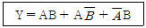
- Y = A + B
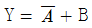
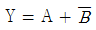
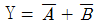
(정답률: 64%)
78. 마이크로프로세서가 16비트 데이터버스(data bus)와 8비트 번지버스(Address bus)를 갖고 있다고 가정할 때 마이크로프로세서에 연결될 수 있는 최대 메모리 용량은 얼마인가?
- 256byte
- 512byte
- 1204byte
- 2048byte
(정답률: 43%)
79. 다음 회로를 논리게이트(GATE)로 표현한 것으로 옳은 것은?
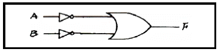
- NOR
- NAND
- EX-OR
- AND
(정답률: 49%)
80. 다음 회로와 등가인 게이트는?
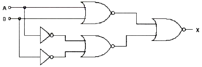
- EX-OR 게이트
- NAND 게이트
- NOR 게이트
- OR 게이트
(정답률: 58%)
5과목: 데이터통신
81. 호스트의 물리적 주소로부터 IP 주소를 구할 수 있도록 하는 프로토콜은?
- ICMP
- FTP
- IGMP
- RARP
(정답률: 53%)
82. 다음이 설명하고 있는 디지털 전송 신호의 부호화 방식은?
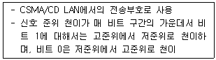
- Alternating Mark Inversion 코드
- Manchester 코드
- Bipolar 코드
- Non Return to Zero 코드
(정답률: 64%)
83. HDLC의 링크 구성 방식에 따라 분류한 동작모드가 아닌 것은?
- 정규 균형 모드
- 정규 응답 모드
- 비동기 응답 모드
- 비동기 균형 모드
(정답률: 40%)
84. 채널용량이 100(kb/s)이고, 채널 대역폭이 10(kHz)일 때 신호 대 잡음비는?
- 10
- 420
- 624
- 1023
(정답률: 43%)
85. 표본화 주파수가 10kHz이고, 원신호 파형의 주파수가 1kHz라면 1주기당 PAM신호는 몇 개인가?
- 1개
- 2개
- 5개
- 10개
(정답률: 48%)
86. IPv6에 대한 설명으로 옳지 않은 것은?
- IPv6 주소는 128비트 길이이다.
- 암호화와 인증 옵션 기능을 제공한다.
- IPv6 주소는 32개의 8진수로 구성된다.
- 프로토콜의 확장을 허용하도록 설계되었다.
(정답률: 56%)
87. HDLC의 프레임 구조에서 헤더영역의 구성이 아닌 것은?
- 플래그
- 주소영역
- 제어영역
- 정보영역
(정답률: 36%)
88. 가상회선 방식에 대한 설명으로 틀린 것은?
- 각 패킷이 스위치를 거치며 매번 최선의 경로를 선택하므로 패킷의 도착순서가 변경될 수 있다.
- 연결 지향 서비스라고도 한다.
- 여러 노드가 동시에 가상회선을 가질 수 있다.
- 패킷을 전송할 때 먼저 경로를 만들고 전송이 끝나면 경로를 해제한다.
(정답률: 31%)
89. TCP/IP 프로토콜에서 UDP가 해당하는 계층은?
- 전송 계층
- 응용 계층
- 데이터링크 계층
- 물리 계층
(정답률: 54%)
90. 디지털 통신망에서 1프레임 단위로 발생하는 slip에 해당하는 것은?
- envelope slip
- edge slip
- constant slip
- controlled shlip
(정답률: 34%)
91. ITU-T 표준인 X.25가 정의하고 있는 것은?
- 경로 설정 알고리즘 정의
- 동기식 1200bps 변복조기 정의
- 전용 회선을 위한 4800bps 변복조기 정의
- 사용자 장치(DTE)와 패킷 네트워크 노드(DCE)간의 데이터 교환 절차 정의
(정답률: 59%)
92. 시분할 다중화(Time Division Multiplexing)의 설명으로 틀린 것은?
- 시분할 다중화에는 동기식 시분할 다중화와 통계적 시분할 다중화 방식이 있다.
- 동기식 시분할 다중화 방식은 전송 프레임마다 각 시간 슬롯이 해당 채널에게 고정적으로 할당된다.
- 통계적 시분할 다중화 방식은 전송할 데이터가 있는 채널만 차례로 시간슬롯을 이용하여 전송한다.
- 통계적 시분할 다중화보다 동기식 시분할 다중화 방식이 전송 대역폭을 더욱더 효율적으로 사용할 수 있다.
(정답률: 51%)
93. Go-Back-N ARQ에서 5번째 프레임까지 전송하였는데 수신측에서 2번째 프레임에 오류가 있다고 재전송을 요청해 왔다. 재전송되는 프레임의 개수는?
- 1개
- 2개
- 3개
- 4개
(정답률: 70%)
94. 데이터 전송 제어 절차에서 데이터 송수신을 위한 논리적인 경로를 구성하는 단계는?
- 회선접속
- 데이터 링크 확립
- 데이터 전송
- 데이터 링크의 해제 통보
(정답률: 62%)
95. OQPSK방식은 QPSK방식에서의 180°위상변화를 제거하기 위해 I-CH이나 Q-CH 중 어느 한 채널을 지연시키는데 이 값은 얼마인가? (단, symbol time은 Ts이다.)
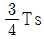
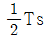
- Ts
- 2Ts
(정답률: 59%)
96. 변조(Keying) 방식에 해당하지 않는 것은?
- ASK
- FSK
- APSK
- TSK
(정답률: 60%)
97. RIP 라우팅 프로토콜에 대한 설명으로 틀린것은?
- 경로 선택 메트릭은 홉 카운트이다.
- 최단 경로 탐색에 Bellman-Ford 알고리즘을 사용한다.
- 링크 상태 라우팅 프로토콜이라고 한다.
- 각 라우터는 이웃 라우터들로부터 수신한 정보를 이용하여 라우팅 표를 갱신한다.
(정답률: 42%)
98. 피기백(Piggyback) 응답이란?
- 송신측이 대기시간을 설정하기 위한 목적으로 보낸 테스터 프레임용 응답을 말한다.
- 송신측이 일정한 시간 안에 수신측으로부터 ACK가 없으면 오류로 간주하는 것이다.
- 수신측이 별도의 ACK를 보내지 않고 상대편으로 향하는 데이터 전문을 이용하여 응답하는 것이다.
- 수신측이 오류를 검출한 후 재전송을 위한 프레임 번호를 알려주는 응답이다
(정답률: 41%)
99. 8진 PSK의 대역폭 효율은?
- 2 bps/Hz
- 3 bps/Hz
- 4 bps/Hz
- 8 bps/Hz
(정답률: 61%)
100. TCP/IP 모델 구조에 해당하지 않은 계층은?
- Physical Layer
- Application Layer
- Session Layer
- Transport Layer
(정답률: 51%)
LTORG 명령어는 어셈블러가 리터럴 데이터를 처리하는 방법 중 하나로, 리터럴 풀을 생성하고 LTORG 명령어가 나타날 때까지 리터럴 데이터를 모아둔 뒤, 리터럴 풀에 저장된 데이터를 메모리에 할당하는 역할을 한다. 따라서 "리터럴 풀은 LTORG 명령 다음에 만들어진다."와 "LTORG 명령어를 사용하지 않는 경우는 처음 제어섹션 끝에 만들어진다."는 LTORG 명령어와 관련된 내용이다.
"각각의 리터럴 풀은 4개의 세그먼트를 가진다."는 LTORG 명령어와 관련된 내용은 아니지만, 리터럴 풀의 구성에 대한 설명으로 LTORG 명령어와 관련된 내용으로 해석할 수 있다.